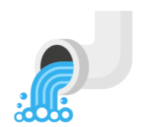

Municipal Solid Wastes (MSW): Every garbage generated by homes and businesses• Plastics • E-wastes• Construction and demolition wastes • Addressing legacy waste dumpsites

Greywater: Wastewater from sinks, shower, etc.• Treatment @WWTPs • Reuse
Blackwater: Wastewater from Toilets• Treatment @WWTPs • Reuse
Hygiene:• Hand washing promotion • Hygiene products• Menstrual hygiene • Hand washing infra designs/facilities
Get in touchKindly fill the details so that we can contact you.
A first of its kind dedicated WASH innovation
eco-system
Quick links
About UsOur WorksProgramsSignatureEventsContact Us
Contact us
Administrative Staff College of India Bella
Vista,Campus, Raj Bhavan Road, Khairatabad, Hyderabad,
Telangana, India – 500082